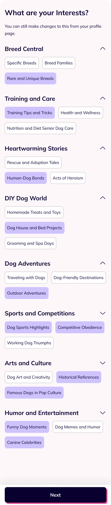
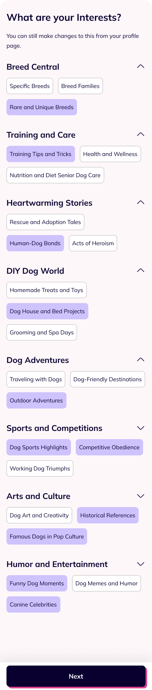
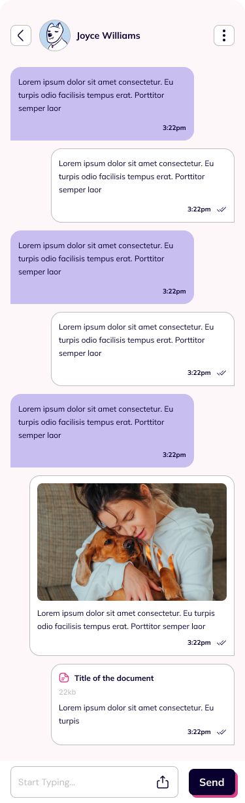
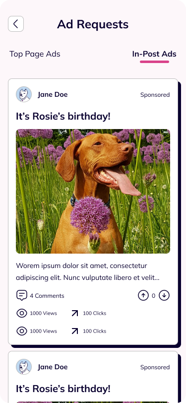
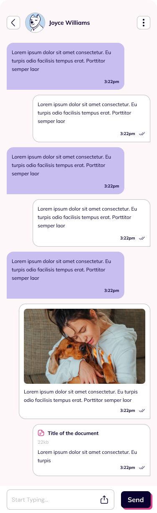
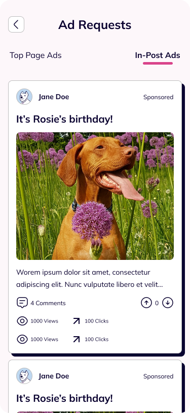

In Summary...
"Dog Posts are Cute. So, what if there was an app where dog lovers could find and share the cutest dog posts without all the noise?”
Services
Product Discovery and UX Strategy
App UI Design for iOS and Android
Industry
Social Media Networks
Entertainment
Pet Care
Client
Dog Stalker
Oct. 2023 - Jan. 2024
What is Wrong with Social Media These Days?
"We get force-fed with potentially triggering content we don't care about, from people we don't know...”
Aimless Binge-Scrolling
Social media platforms try to get users hooked with an endless supply of content...
Irrelevant Content
The algorithm sends users an endless stream of content outside our real interests...
No Real Connection
Social networks fail at their original jobs... building meaningful human connections...

 



 





Designing Dog Stalker to fix these problems...
UX Research: Insights from Dog Lovers
Nearly 70% of the Dog Parents surveyed often engaged actively with contents around tips and tricks for dog parents...
This was a major finding of a field study on 3 social media apps to explore the specific kinds of content dog lovers create and love...
Nearly 55% of the pet parents saved contents recommending pet toys, dog grooming and veterinary services....
This reveals two user personas: Content Creators, looking to share pet-related posts, and Pet Parents, consuming tips and cute dog content...
Ideation: Turning Insights into Solutions
During brainstorming with the product founders and 12 pet parents, I turn research insights into a bucket-list potential solutions. Afterwards, I streamlined these ideas using an impact-complexity matrix...
Minimum Viable Product...
Posts and Feeds
I designed features that allowed dog parents and content creators, view and engage with dog-related content...
Forums
The designs also included a community feature that enabled dog parents join discussions with multi-media content...
Business Ad Posts
Brand can grow visibility and leads within the community with sponsored posts, targeted at specific user groups...
Reward System
Dog Stalkers features a reward system to encourage community engagement. Paws can be monetized as coupons...
Designing the Dog Stalker App
From rough sketches, I crafted a prototype of the app on Figma. Afterwards, I implementing feedback from the development team and insights from a competitor analysis in UI design iterations...
Scroll Slider Left
Community Posts by Dog Lovers
Making multi-media Posts
Rewards System - Dog Paws
Tailoring Feeds by Interests
Finding Posts around Dogs
Social Media Profiles for Dogs
My initial steps in this step was designing reusable UI components and a style guide on Figma...
Introducing Dog Stalker...
Styling Dog Stalker: Color
"I picked a neubrutalist style that centered dog content with stark drop shadows and outlines on a plain off-white background...”
Bold
Dark Indigo (#09002F) used in texts, shadows and outlines provided a bold contrast against the off-white background...
Fun and Playful
Vivid Pink (#D9438A) served as an accent color to match the pet brand's vibrancy and playful personality...
Typography
I picked a single minimalist neo-Grotesque san-serif, Mulish to match Dog Stalker's branding...
This typeface fits the neu-brutalist style of Dog Stalker. It is bold and concise style prioritizes content over form...
The Results...
Designing the Dog Stalker App
The goal was not to reinvent social media apps but to craft more rewarding experience for Pet Lovers...
The key features reward community participation, and the creation and consumption of valuable content within the user's interest...
PROJECTS
ABOUT ME
Contact Me